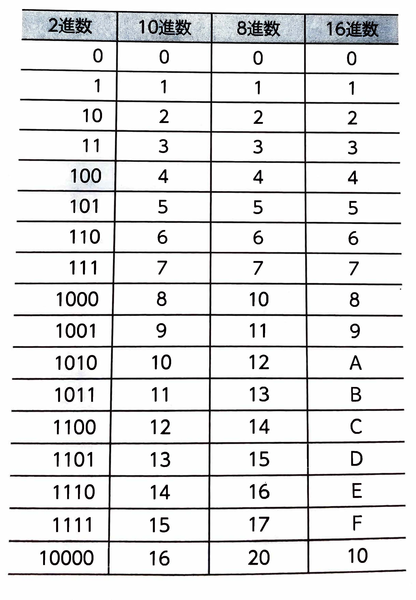

【 ２進数・１０進数・８進数・１６進数 】
コンピュータ内部では、電流の有無や電圧の高低などによってデータを識別して処理されています。識別されたデータは｢0｣と｢1｣で組みわわされた数値
で表現され、この2種類の数字で情報を表す方法を｢2進数｣といいます。2進数は人間にとって判断しにくいという特徴があるため、通常使っている0~9
の数字を使った｢10進数｣に置き換えて表現されます。0、1までは同等ですが、２進数での２以降の数値は桁が上がって表現されます。また、コンピュータで扱う数値の表現方法には、0~7の数字を使った｢8進法｣や、0~9の数字とA～Fのアルファベットを使った｢16進数｣などがあります。
